A Direct Indicator of Climate Change
Ocean warming refers to the long-term increase in average ocean temperature caused by the absorption of excess heat trapped in the Earth's climate system, primarily as a result of human activities such as fossil fuel combustion and greenhouse gas emissions (IPCC, 2021; NASA, 2024).

The ocean functions as the planet's largest heat sink, absorbing over 90% of the excess heat generated by anthropogenic climate change (Cheng et al., 2024; NOAA, 2024).

Carbon uptake in the oceans is done either chemically, by directly dissolving the carbon dioxide into seawater, or biologically by marine ecosystems (NOAA PMEL, 2024).
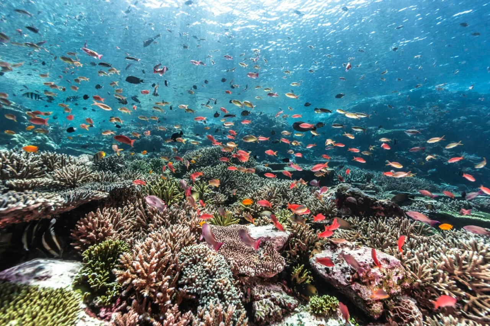
Four Pillars of Ocean Significance
Oceans absorb and store immense quantities of heat, slowing atmospheric warming. Without the ocean's heat-buffering capacity, the rate of surface warming would be dramatically greater (Levitus et al., 2012).
The ocean accounts for 25–30% of all anthropogenic CO₂ absorption — through both direct chemical dissolution and biological uptake by marine ecosystems, including "blue carbon" coastal habitats (Friedlingstein et al., 2023).
Billions of people depend on seafood for protein. Coral reef ecosystems alone support over 25% of all marine life while covering less than 1% of the ocean floor (FAO, 2024; Fisher et al., 2015).
Coral reefs, mangroves, and wetlands reduce wave energy and protect coastlines. Ocean-based industries generate significant economic value for coastal communities globally (OECD, 2016; Spalding et al., 2017).
The Ocean Feeds the World
According to the Food and Agriculture Organization, billions of people worldwide depend on seafood for protein — making ocean health directly tied to global food security (FAO, 2024).
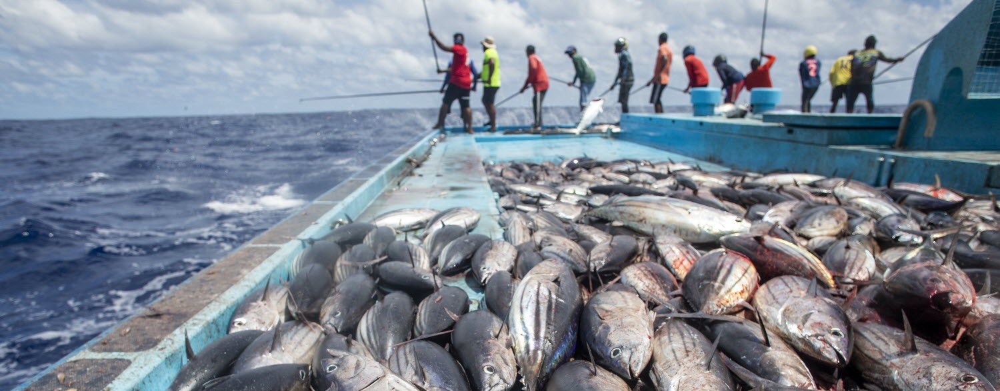
According to the FAO, the ocean ecosystem acts as the base for the global fisheries sector (FAO, 2024).
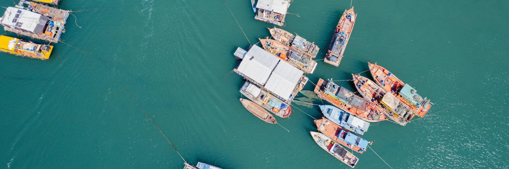
The oceanic environment provides for economic opportunities through activities like fishing, tourism, and recreation, creating significant economic benefits for coastal areas (Spalding et al., 2017; World Bank, 2017).

Ocean warming amplifies the intensity of extreme weather events such as hurricanes, typhoons, and tropical storms (Emanuel, 2005; Knutson et al., 2020).
Fueling Storms, Amplifying Disasters
Ocean warming amplifies the intensity of extreme weather. The enormous energy absorbed by the oceans becomes extra fuel for hurricanes, typhoons, and tropical storms — increasing wind speed, precipitation, and destructive capacity (Emanuel, 2005; Knutson et al., 2020).
The cumulative effect of ocean warming is also linked to the changing dynamics of large-scale climatic phenomena like El Niño and La Niña (Cai et al., 2014; McPhaden et al., 2020).
Accelerating Beyond Projections
Recent observations indicate that ocean warming is accelerating at a pace exceeding many previous projections. 2023 and 2024 recorded the highest sea surface temperatures ever measured by modern instruments (NASA, 2024; WMO, 2024).

Marine heat waves are becoming more frequent, more intense, and lasting longer — leading to coral bleaching and deaths across major reef systems globally (Frölicher et al., 2018).
A Two-Layered Analytical Framework
This research analyzes ocean warming through a dual analytical framework — addressing not only broad mitigation but also impact-specific adaptation strategies.
Solutions for Ocean Warming Itself
Targeting the core thermodynamic causes of ocean warming and minimizing local thermodynamic impacts on marine ecosystems.
Impact-Specific Adaptation Measures
Exploring strategies devised to tackle each of the three major consequences of ocean warming individually.
Cutting Carbon from the Seas
Decarbonization is the process of reducing greenhouse gas emissions from shipping by adopting new fuels, technologies, and operational practices.
Shipping & Global CO₂ Emissions
Since shipping accounts for approximately 3% of global CO₂ emissions, decarbonization is essential for shipping.
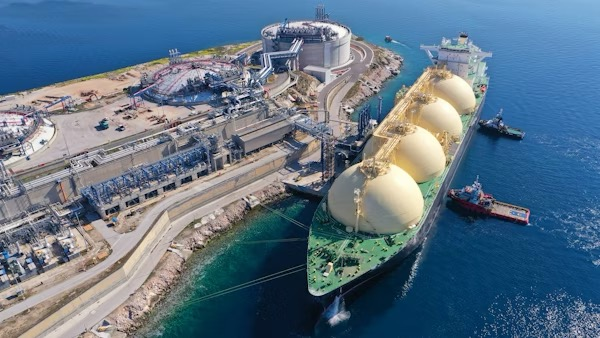
What Decarbonization Includes
For instance, decarbonization includes:
Decarbonization is the process of reducing greenhouse gas emissions from shipping by adopting new fuels, technologies, and operational practices — essential given that shipping accounts for approximately 3% of global CO₂ emissions.
Marine Albedo Enhancement Using Microbubbles
Marine albedo enhancement (MAE) using microbubbles is a solar radiation management technique that increases the reflectivity of the ocean, leading to a reduction in ocean temperature.
Creating Ocean Mirrors with Microbubbles
This strategy involves creating a layer of tiny, long-lasting air bubbles (microbubbles) on the surface of the ocean.
The Ocean as a Heat Absorber
The ocean covers 70% of the Earth's surface and acts as a massive heat storage — its dark color absorbs around 94% of incoming solar radiation (Enhanced). When the dark-colored ocean absorbs more heat, it leads to even more heat absorption, resulting in global warming.
Equipped Ships & Specialized Technology
Ships should be equipped with technology to produce large quantities of microbubbles — such as specially developed nozzles or mechanical shakers — and stabilizing the microbubbles through the addition of chemical surfactants, which are amphiphilic nanoparticles or phospholipids (Korhonen et al., 2010).
Ecological Risks & Current Stage
Microbubble techniques can have a negative impact on ocean food chains. A layer of bubbles would reduce the amount of solar radiation absorption in the water, which can decrease the photosynthetic activity and amount of phytoplankton — the base of the ocean food chain (Microbubbles).
The layer of microbubbles can hinder gas exchange, which results in the reduction of oxygenation. Marine biodiversity and productivity will have a negative impact (Microbubbles).
The microbubble technique is more like a theory rather than being implemented. It needs development to be used in the actual ocean.
MAE using microbubbles offers an immediate cooling effect by reflecting solar radiation before it is absorbed by the ocean. However, ecological risks to phytoplankton and oxygen levels — combined with its current theoretical status — mean it requires significant further development before real-world deployment.
Redirecting Industrial Heat Before It Reaches the Ocean
A cooling tower refers to an arrangement whose function is to cool down the temperature of the cooling water using heat transfer between the water and the atmosphere, following which the water may be recycled or released.
How a Cooling Tower Works
A cooling tower cools heated water through heat transfer between water and the atmosphere, after which the cooled water is recycled or safely released. The process unfolds in three core steps (Baltimore Aircoil, n.d.; SARA Cooling Tower, 2024).
Hot Water Input
Industrial cooling water — heated during power generation, typically above 30°C — is delivered by pipes to the cooling tower. Nozzles at the top spray it downward, dispersing it into small droplets that maximize surface area for heat exchange (saVRee, 2019).
Counter-Current Heat Exchange
Water flows downward through packing material that disperses it into fine films, while air flows upward from the base — either mechanically or by natural convection. This counter-current arrangement maintains a continuous temperature gradient, maximizing heat exchange efficiency (Baltimore Aircoil, n.d.).
Evaporative Cooling & Discharge
The primary cooling mechanism is evaporation — water changes state, releasing latent heat and rapidly cooling the remaining water. Convective heat transfer occurs simultaneously. The cooled water collects in a reservoir below, typically 6–8°C cooler than when it entered (Baltimore Aircoil, n.d.; SARA Cooling Tower, 2024).

Reducing Thermal Shock at the Source
The primary advantage of cooling towers lies in their ability to significantly reduce the temperature of discharged water — preventing the severe thermal stress that excessively hot water imposes on surrounding marine organisms (CET Enviro, 2025).
This effect is particularly pronounced near power plants, where heat is continuously generated at a single point. Cooling towers act to reduce heat at its source before it spreads into larger water bodies.
As noted by the European Environment Agency (EEA), the cooling water circulation system can decrease water intake by up to 95% — reducing both thermal release and overall environmental impact. Cooling towers are thus not only cooling devices, but integral systems for decreasing water consumption and heat discharge simultaneously (CET-Enviro, 2025).
Case Studies in Policy & Practice
New York Clean Water Act
Under Section 316(b) of the Clean Water Act, the New York State Department of Environmental Conservation mandated cooling towers over once-through cooling in power plants — recognizing their role in reducing both discharge temperature and total heat load to water bodies (U.S. EPA, 2001; Amstutz 2021; Dooner, 2018).
Indian Point — The Cost of Absence
At the Indian Point Energy Centre, once-through cooling systems led to higher river temperatures and the deaths of approximately one billion fish per year — a stark illustration of the environmental damage caused by unmanaged thermal discharge, and a direct case for the necessity of cooling towers.
Lianjiang Nuclear Power Plant
The Lianjiang plant employs extremely large cooling towers, reducing thermal discharge volume to approximately 1/40th of conventional levels — demonstrating that advanced cooling tower systems can dramatically minimize both temperature and quantity of heat released into the environment (World Nuclear News, 2025).

Cooling towers near power plants reduce both the temperature and the quantity of heat discharged into the environment.
A Targeted Tool, Not a Global Fix
Nonetheless, this technique possesses certain limitations.
When ambient air is too warm and humid, evaporation efficiency decreases significantly — reducing the cooling system's overall performance. Cooling towers cannot operate at full effectiveness under all atmospheric conditions (Baltimore Aircoil, n.d.).
Cooling towers can only address thermal discharge from identifiable industrial sources such as power plants. They are ineffective against the broader ocean warming caused by global climate change — reducing local effects but not resolving the systemic issue.
Installation requires significant energy consumption and capital expenditure. The Indian Point Nuclear Power Plant case illustrates this directly — despite the ecological case for cooling towers, the cost burden contributed to the facility's shutdown (Electric Power Research Institute, n.d.; U.S. EPA, n.d.).
Cooling towers are a proven mechanism for reducing thermal pollution at industrial point sources. However, while cooling towers provide an ecological role, monetary factors should also be taken into account during their implementation — and they cannot resolve the broader issue of ocean warming entirely.
Why Ocean Warming Is Driving Marine Ecosystem Collapse
Rising ocean temperatures represent not just ecological decline, but a structural failure of marine systems — with cascading environmental and socio-economic consequences.
More Than Biodiversity Decline
Marine loss signifies a structural failure of the marine ecosystem — leading to environmental and socio-economic impacts far beyond species counts.
Heat Stress & Metabolic Failure
As marine heatwaves intensify in frequency and duration, organisms experience heat stress beyond their thermotolerance capacity — disrupting metabolic and reproductive functions, causing coral deposition, migrations, and habitat damage (Smith et al., 2021; Najeeb et al., 2025).
Food Web Disruption
When corals expel symbiotic zooxanthellae under heat stress, they virtually lose their primary energy source, making long-term survival difficult. Mass coral death reduces habitat complexity and kills off breeding and feeding grounds important to numerous marine species.
Fisheries & Food Security
Predators become unable to prey on their food sources, causing fisheries to crash rapidly. In Korea, recent ocean heatwaves contributed to massive seafood damage — directly linking temperature-driven ecological changes to reduced catch and economic instability in coastal communities (Hae-Rin, 2025).
Coastal Protection & Economies
Healthy oceans are important for seafood production, tourism revenue, and coastal protection. Coral reefs absorb wave energy and protect shores from storm surge and erosion. Their loss imposes direct economic losses and indirect adaptation costs (Smith et al., 2021; Najeeb et al., 2025).
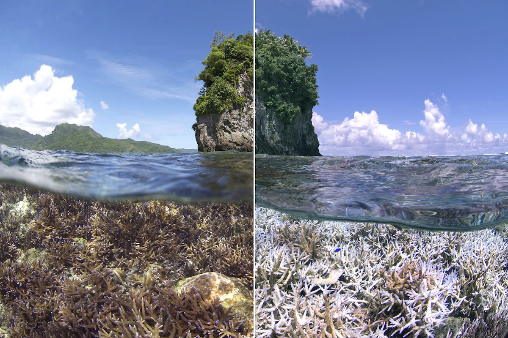
Kelp, Seaweed & Marine Habitat Loss
Ocean heat waves cause extensive ecological destruction beyond coral reefs — through altered species ranges and degraded habitat stability. As stated by NOAA, increases in ocean temperatures affect the health of kelp forests, seaweed, and marine life habitats through increased strain on their heat tolerance threshold and forced migration towards cooler environments (NOAA, n.d.).
Such redistribution results in an imbalance within the ecosystem. The ocean is the largest absorber of more than 90% of the excess heat from the atmosphere, meaning that marine habitats will be the earliest and most affected by global warming (NOAA, n.d.).
With increasing heat stress, organisms move towards cooler places — altering established ecological interactions and making marine life unpredictable. Not only does this redistribution change biodiversity patterns, it also poses challenges to fisheries, conservation areas, and national jurisdictions built on historically stable species distributions (Stock, 2025; Niranjan, 2026).
These Events Are Already Happening
80% Coral Lost
Approximately 80% of coral reefs in Little Cayman died or became bleached owing to marine heatwaves, with 54% mortality confirmed in the final investigation. Mass deaths eliminated critical breeding and feeding grounds relied upon by numerous reef species (NOAA Coral Reef Watch, n.d.).
Systematic & Repeated Damage
Similar large-scale cases in the Great Barrier Reef and species loss in the Florida Keys suggest that these effects are not unusual events, but are occurring more systematically and repeatedly (ICRI, 2024; Florida International University, 2025).
Fishery Disaster from Heat
Recent ocean heatwaves contributed to massive seafood damage in Korea, showing that ecological changes caused by temperature changes are directly linked to reduced catch and economic instability in coastal communities (Hae-Rin, 2025).
Developing Heat-Tolerant Corals
Breeding or engineering heat-resistant corals aims to improve the resilience of corals by utilizing natural variation and controlled adaptation processes.
Two Pathways to Resilience
Breeding or engineering heat-resistant corals works through two main mechanisms: selective mating and thermal preconditioning (Humanes et al.).
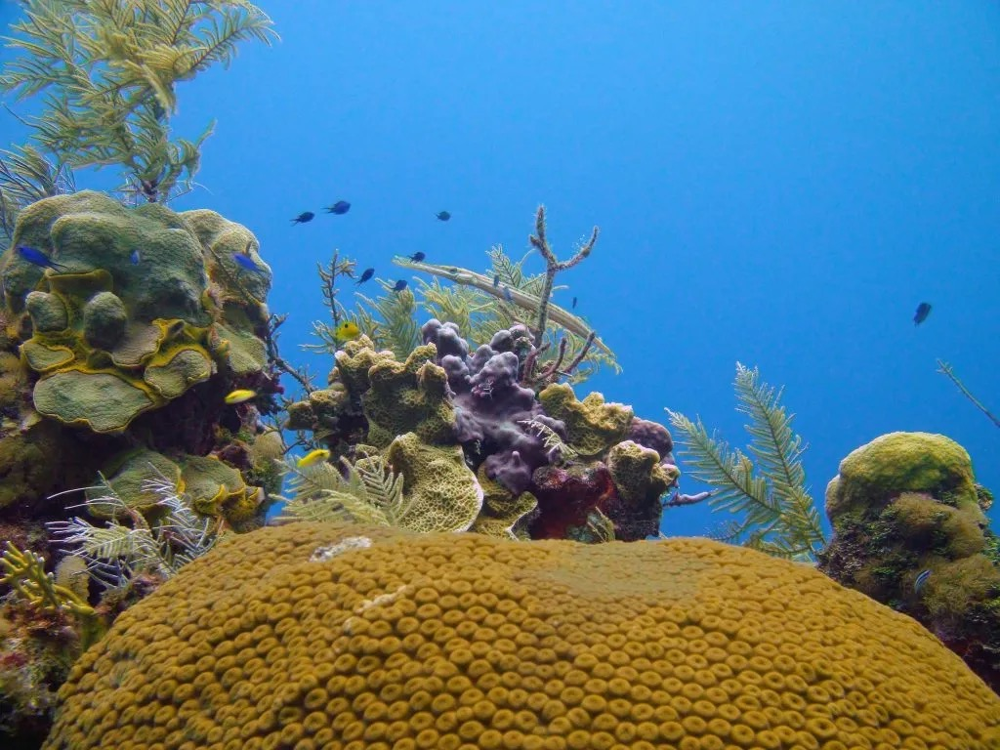
Selective Mating
Identifying coral genotypes that naturally exhibit higher heat resistance — found in warmer reef environments — and hybridizing them to produce species with enhanced resilience (Humanes et al., 2024; NOAA, 2024). This method uses existing genetic diversity rather than introducing completely new traits, making it a relatively ecologically suitable intervention.

Thermal Preconditioning
"Training" coral by exposing them to nonfatal levels of thermal stress in a controlled environment. This process strengthens mechanisms such as heat shock protein production and symbiotic algal control, enabling corals to better withstand subsequent rapid temperature increases (Ferrara et al., 2025). Experiments have found this preconditioning can reduce thermal stress response by up to 90% — though effectiveness varies by species and conditions.

The Discovery of "Super Corals"
Recent findings supported by UNESCO provide a strong empirical basis for this approach. Researchers found so-called "super coral" in extreme environments — such as the Tatakoto atoll in French Polynesia, where water temperatures fluctuate 3–4°C per day and reach up to ~35°C.
Not only do several coral species thrive under these harsh conditions, but even branched coral — commonly known to be vulnerable — showed unexpected resilience. This demonstrates that coral heat resistance can be developed through environmental exposure, not a fixed genetic value.
If corals can naturally adapt to extreme heat fluctuations, this can be extended to reef restoration through cloning and training. Experiments implanting these heat-resistant corals into new environments are verifying whether resilience can be maintained outside existing habitats — directly linked to selective breeding and assisted migration strategies.
From Lab to Reef — at Scale
Higher Survival Rates
Selectively hybridized corals exhibit significantly higher survival rates during heat stress events, suggesting adjuvant breeding may improve reef persistence in the short to medium term (Humanes et al., 2024).
Improved Recovery
Corals sourced from warmer donor reefs show improved post-stress recovery rates. These corals not only survive bleaching events more often — they recover faster, which is critical for long-term reef persistence (NOAA, 2024; Communications, 2024).
Ecosystem-Scale Ambition
The Great Barrier Reef Foundation is already growing heat-tolerant corals for damaged reef restoration. Automated and semi-automatic systems aim to produce and release millions of heat-resilient corals per year — a major step from experimentation to ecosystem-scale intervention (Growing Heat Tolerant Corals, 2025).


An Adaptation, Not a Cure
The mitigation potential of this solution is inherently limited (Ferrara et al., 2025).
Effects may be reduced in extreme or long-term warming scenarios where temperature thresholds exceed even improved resistance levels. If the root cause of ocean warming remains unresolved, engineered corals will eventually reach their thermal limits.
Coral optimized for thermal resistance may exhibit reduced growth rate or fertility — potentially negatively affecting ecosystem recovery or maintenance over the long run (Ferrara et al., 2025).
Coral breeding, conditioning, and transplantation are resource-intensive and generally applied on a local scale. Scalability remains a major constraint.
Breeding and developing heat-tolerant coral can significantly decrease coral mortality, but effectiveness is bounded by scalability, ecological trade-offs, and the continued progression of ocean warming. This strategy works best when used in conjunction with other approaches.
Real-Time Monitoring for Predictive Management
The real-time marine monitoring system is designed to observe and forecast the occurrence of marine thermal stress through the use of satellite data, field sensors, and prediction models.
How Real-Time Monitoring Works
The real-time marine monitoring system observes and forecasts marine thermal stress using satellite data, field sensors, and prediction models — enabling early prediction of coral bleaching and ecosystem disturbance.
Degree Heating Weeks (DHW)
Developed by NOAA Coral Reef Watch, DHW measures accumulated heat stress over a 12-week period — combining both the intensity and duration of temperature anomalies. It calculates a cumulative °C-week value by tracking when sea surface temperature remains at least 1°C above the bleaching threshold (NOAA CRW, n.d.).
This index is critical because coral bleaching stems from extended warming, not sudden spikes. DHW data is updated continuously with 5 km spatial coverage worldwide, providing near-real-time reef condition assessment (NOAA CRW, n.d.; PacIOOS, n.d.).

From Data to Action
Unlike biological interventions, real-time monitoring does not directly prevent marine loss — but it effectively mitigates impact by enabling targeted interventions at the right time and scale.
When DHW indicators exceed the bleaching threshold, alerts from NOAA coral reef monitoring systems trigger rapid management responses including temporary closures of fishing and diving areas, coral rescue operations, and underwater shading of vulnerable nurseries (NOAA CRW, n.d.; NOAA CRW DSS Guide, 2016).
Forecasting scenarios also enable preemptive interventions — short-term fishing bans, pollution reduction measures — ensuring that marine heat waves do not compound with additional ecological stressors during already-critical periods (Directory, 2025).
By differentiating areas with recovery potential from those under highest heat stress, monitoring systems guide strategic placement of heat-resistant corals and prioritize conservation efforts — maximizing success rates while preventing resource waste (Lippert et al., 2026).
Three Domains of Effectiveness
Ecosystem Protection
Community-based early warning systems track temperature anomalies and early bleaching signs, enabling localized rapid response before damage reaches irreversible scale — shifting restoration from post-recovery to preemptive ecosystem management (Hidayati et al., 2023).
Fisheries Management
Satellite-derived sea surface temperature (SST) prediction helps fisheries adjust catch volumes, seasonal timing, and target species distribution in response to changing thermal conditions — reducing economic shock from ecosystem shifts (Tian et al., 2024).
Tourism & Coastal Economies
DHW-based seasonal prediction allows governments and industries to anticipate bleaching events and proactively prepare for economic impacts — enabling flexible planning of economic activities and reducing socioeconomic vulnerability (G. Liu et al., 2018).
Data Alone Is Not Enough
The mitigation scope of real-time monitoring is inherently indirect and depends entirely on the governance capacity to act on the data it generates.
Monitoring systems do not prevent warming or bleaching. They generate alerts — but as NOAA methodology emphasizes, generating an alarm does not guarantee that protective actions will follow (NOAA CRW, n.d.).
For monitoring data to become effective intervention, funding availability, regulatory frameworks, and stakeholder cooperation must all align simultaneously. Without effective governance, monitoring benefits remain only potential (NOAA CRW, n.d.).
Real-time monitoring significantly improves marine loss management, but it cannot be prevented independently, and functions as an important but supportive component within a broader climate and conservation strategy.
Blue Carbon Ecosystem Restoration
Rebuilding blue carbon ecosystems can be likened to the decrease of greenhouse gases and resilience building of nature — one of the few approaches that can contribute to climate mitigation, adaptation, and ecosystem restoration simultaneously.
What Is the Blue Carbon Ecosystem?
Mangrove forests, seaweed growing areas, and tidal zones are collectively referred to as the "Blue Carbon Ecosystem." Restoring these ecosystems is equivalent to reducing greenhouse gases and building natural resilience.
Mangrove Forests
Their extensive root systems dissipate wave energy, reduce storm surges, and limit coastal erosion — functioning as natural shock absorbers for shorelines while trapping carbon in oxygen-depleted sediments for centuries (Herr et al., 2016).
Seagrass Meadows
Seagrasses capture debris and fortify the sea floor, maintaining water purity within the ocean. They act as critical nursery habitats for commercially vital fish species, directly supporting fisheries productivity and food security (Janes et al., 2020).
Tidal Salt Marshes
Highly efficient at sequestering carbon through photosynthesis, storing it both in biomass and in hypoxic sediments where slow decomposition keeps carbon locked away for hundreds of years (Friess et al., 2024; Hilmi et al., 2021).
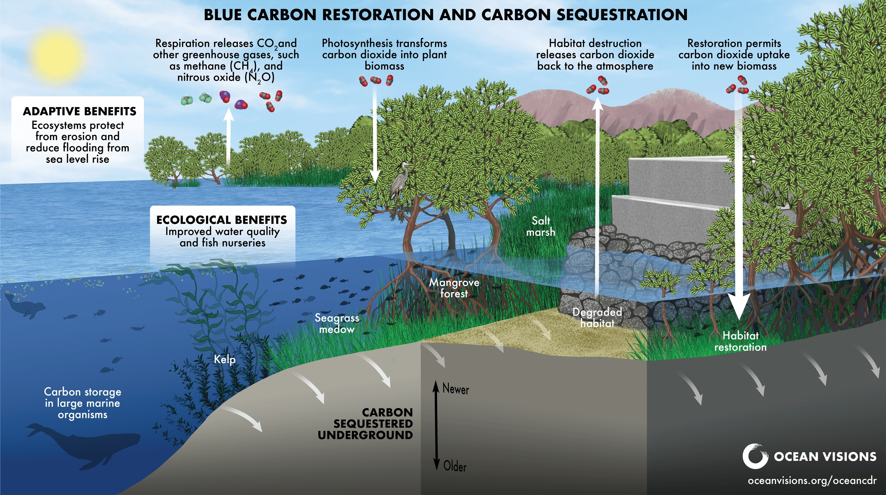
The blue carbon cycle: photosynthesis captures CO₂ into biomass, sequestered in oxygen-depleted sediments for centuries.
Carbon, Stored for Centuries
Coastal vegetation absorbs CO₂ through photosynthesis and stores carbon both in biomass and in hypoxic sediments — where slow decomposition keeps it locked away for hundreds of years (Friess et al., 2024; NOAA, n.d.).
Restoring degraded blue carbon habitats re-activates this carbon uptake pathway, while protecting existing ecosystems prevents stored carbon from being released back to the atmosphere (Macreadie et al., 2026).
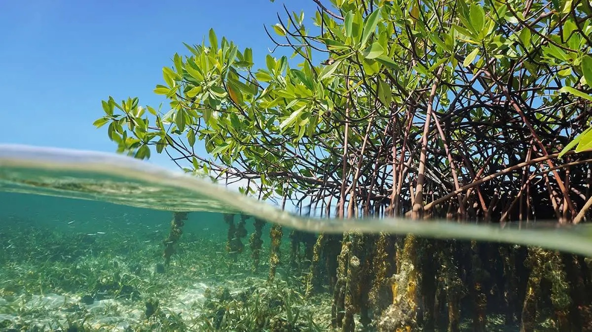
Four Ways Blue Carbon Combats Marine Loss
Carbon sequestered in biomass and oxygen-depleted sediments remains isolated for hundreds of years, reducing atmospheric CO₂ and slowing the rate of ocean warming — addressing the root cause of marine degradation (Friess et al., 2024; Hilmi et al., 2021; Macreadie et al., 2026).
Mangrove root systems reduce wave height and storm surges, limiting coastal erosion and sediment disturbances that act as major stressors on neighboring coral and algae zones — sustaining the physical conditions marine biodiversity requires (McGlathery et al., 2024).
By filtering sediments and excess nutrients, blue carbon ecosystems maintain clear, uncontaminated water — creating conditions that benefit light-dependent organisms like corals and seaweeds, especially under elevated temperature stress (McGlathery et al., 2024).
These habitats serve as breeding grounds for commercially vital species, offering predator protection and fertile feeding zones — sustaining fish population levels and fishery yields that coastal communities depend on for food security and livelihoods (Janes et al., 2020).
An Integrated Climate Solution
From a large perspective, these ecosystems are recognized as integrated climate solutions operating simultaneously across carbon, physical, and biological systems.
The blue carbon ecosystem is highlighted as one of the few approaches that can contribute to climate mitigation, adaptation, and ecosystem restoration simultaneously — intervening in marine loss through system stabilization across environment, livelihood, and human wellbeing.
Context-Dependent & Long-Term
Mitigation benefits are real but are subject to contextual differences and will be realized over the long term. Restoration is not consistent across environments.
Recent assessments reveal that although blue carbon technologies present positive prospects, their efficiency can be compromised by challenges in implementation, carbon accounting, and competing uses for coastal land (Climate Analytics, 2025).
Restoration outcomes are dependent on proper governance and sustained management. Results may differ geographically.
Blue carbon systems represent one of the most holistic approaches toward combating marine degradation, as they combine both mitigation and adaptation techniques; however, their effectiveness relies on continued protection and widespread application.
The Ocean's Evil Twin Threat
Ocean acidification is frequently called the "evil twin of climate change." Since the Industrial Revolution, ocean acidity has increased by approximately 30%, a rate faster than at any time in the last 55 million years.
rose this fast
A Chemical Crisis Born from Carbon
Ocean acidification is the harmful consequence of excess carbon dioxide in the atmosphere (Smithsonian, 2014). Assumed to have started since the Industrial Revolution, it now threatens marine ecosystems at an unprecedented pace (Osterloff).

Ocean warming and acidification strips corals of their symbiotic algae, disrupting the marine ecosystem.
Atmospheric CO₂ → Ocean Absorption
Since the Industrial Revolution, rising CO₂ concentrations have accelerated ocean absorption of carbon dioxide. As CO₂ dissolves in seawater, it forms carbonic acid (H₂CO₃), which then dissociates to release hydrogen ions — lowering the ocean's pH and increasing its acidity (Smithsonian, 2014; Osterloff).
Marine Ecosystem Disruption
As a result of these physical and chemical changes, the marine ecosystem is disrupted.
Tracking the Rising Temperature of the Ocean
Keeping track of the rising temperature of the ocean is important. Monitoring the live situation of the ocean helps us to quickly respond to changes in temperature.
Otoliths — A Biological Record of Ocean Temperature
Scientists have found that fish have small growths called otoliths in their ears that keep track of their chemical environment throughout their lifetime (Minogue, 2019).
As these rings grow annually, it is possible to keep track of information like the oxygen isotope value, ultimately allowing us to study the temperature exposure of these fish (von Leesen, 2021).
Annual rings encode the oxygen isotope value — allowing study of the fish's temperature exposure over its lifetime.
Ocean Alkalinity Enhancement (OAE)
Alkaline materials can neutralize and absorb carbon dioxide. OAE adapts and accelerates a similar method to natural ocean alkalinity caused by alkaline minerals.
Accelerating Nature's Own Chemistry
Alkaline materials can neutralize and absorb carbon dioxide. OAE adapts and accelerates a similar process to natural ocean alkalinity caused by alkaline minerals dissolving over geological timescales.
Direct Alkaline Solution
Adding alkaline and/or basic solutions directly into seawater — rapidly raising the pH of the surrounding water and enabling it to absorb more atmospheric CO₂ (Environmental Protection Agency, 2026).
Mined Alkaline Minerals
Adding certain types of mined alkaline minerals — such as silicates and carbonates — to seawater or beaches, where they dissolve and gradually increase ocean alkalinity over time (Environmental Protection Agency, 2026).

OAE system: alkaline materials react with seawater CO₂ to form bicarbonate stable for more than 10,000 years.
Promise and Open Questions
Long-Term Carbon Storage
By converting dissolved CO₂ into bicarbonate ions, OAE stores carbon in a chemically stable form that persists in the ocean for more than 10,000 years (Carbon to Sea Initiative).
Biogeochemical Uncertainty
Since OAE changes ocean biogeochemical cycling through highly accelerated activity, it is under research how alkaline materials cause the minimum effects on the marine environment (Dickhardt, 2024).
Ocean Alkalinity Enhancement offers a promising pathway for durable carbon removal — converting CO₂ into bicarbonate stable for over 10,000 years. However, since OAE changes ocean biogeochemical cycling through highly accelerated activity, it is under research how alkaline materials cause the minimum effects on the marine environment.
Bipolar Membrane Electrodialysis (BPMED)
A new technology that uses electrical energy through an electrodialysis stack to split H₂O — separating the ocean into an acidic stream and an alkaline stream, neutralizing acidity and enabling carbon capture.
Splitting Water to Restore Balance
BPMED uses electrical energy through an electrodialysis stack to split H₂O into H⁺ and OH⁻ ions.
The process separates into two distinct streams — an acidic stream (H⁺-rich) and an alkaline stream (OH⁻-rich).
The acidic stream is extracted and removed, while the base-rich alkaline stream is returned to the ocean.
The added alkalinity neutralizes ocean acidity and restores pH to safer levels. The extracted acidic stream can be stored, resulting in carbon capture (Mutahi, van Lier, & Spanjers, 2024).
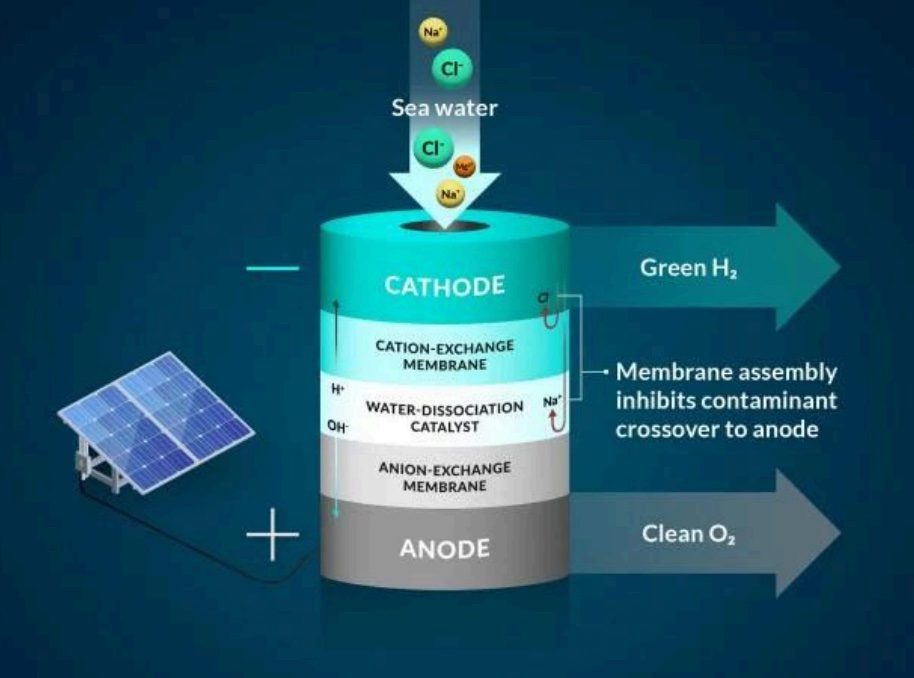
BPMED electrodialysis stack diagram
Two Benefits from One Process
Ocean pH Restoration
By increasing the level of the ocean's alkalinity through the returned alkaline stream, the acidity of the ocean is neutralized and the pH levels can be restored to more safer levels.
Carbon Capture Potential
The extracted acidic stream could also be stored, thus resulting in carbon capture (Mutahi, van Lier, & Spanjers, 2024).
BPMED presents a new way to reduce the level of acid in the ocean — splitting water to separate an acidic stream and an alkaline stream, restoring ocean pH, and enabling carbon capture from the extracted acid stream (Mutahi, van Lier, & Spanjers, 2024).
Using Kelp
Using nature to solve this problem is also available. Seaweeds like kelp absorb carbon dioxide, lowering the level of acidification, and also giving off oxygen.
How Kelp Fights Ocean Acidification
Seaweeds like kelp absorb carbon dioxide, lowering the level of acidification, and also giving off oxygen (NOAA Fisheries, 2022).
CO₂ Absorption & Oxygen Release
Seaweeds like kelp absorb carbon dioxide, lowering the level of acidification, and also giving off oxygen (NOAA Fisheries, 2022).
Carbon Removal via Harvest
Once they are harvested, they take the carbon with them and leave oxygen in the ocean (NOAA Fisheries, 2022).
Planting More Kelp
Planting more of these beneficial seaweeds will help lower the rate of acidification of the ocean.
Seaweeds like kelp absorb carbon dioxide, lowering the level of acidification, and also giving off oxygen. Once harvested, they take the carbon with them and leave oxygen in the ocean — planting more of these beneficial seaweeds will help lower the rate of acidification of the ocean (NOAA Fisheries, 2022).
When the Ocean Fuels the Storm
Ocean warming doesn't just threaten marine ecosystems — it supercharges the atmosphere, turning routine weather patterns into violent, infrastructure-destroying events.
How a Warming Ocean Powers Extreme Weather
The global ocean acts as the primary reservoir for heat on Earth. The extra energy stored there must be released back into the environment — and it does so with increasing violence.
The ocean has absorbed more than 90% of the extra heat caused by human activities — acting as a global buffer that has so far moderated surface air temperatures (NOAA, n.d.).
A warmer ocean surface evaporates water much faster — loading the atmosphere with enormous quantities of water vapor and latent heat energy that wouldn't otherwise be there.
Storm systems absorb this extra fuel — intensifying in speed, size, and destructive power. The result is violent weather that disrupts the stable energy infrastructure societies depend on (Gonçalves et al., 2024).
Typhoon-Resistant Wind Turbines
As warming oceans double the likelihood of extreme hurricane seasons, engineering energy infrastructure to survive — and keep operating through — violent storms becomes an essential line of defense.
How Ocean Warming Powers Stronger Storms
Hurricanes are powered by the evaporation of warm ocean water. As this water turns into rain, it releases heat that lowers the air pressure and makes the wind blow much faster (Emanuel, 2017).
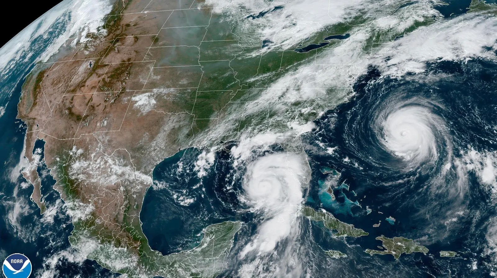
Automated Sensors, Self-Protecting Turbines
Typhoon-resistant wind turbines can prevent the destruction of energy systems during a hurricane. These turbines have automated sensors to watch the direction of wind changes in real time.
Even if the main power is cut off, the turbines can power up using their own battery to change the position of the blades — protecting the structure from extreme wind gusts (Gonçalves et al., 2024).
Installing these machines in locations where hurricanes and typhoons occur frequently can mitigate the massive damage caused by these storms (Gonçalves et al., 2024).
Built for the Open Sea
Offshore wind farms represent the frontier of storm-resilient energy infrastructure — positioned in the very environments where typhoons and hurricanes are most intense.
Typhoon-resistant wind turbines address one of the most immediate infrastructure vulnerabilities created by ocean warming — the increasing frequency and intensity of tropical cyclones. By using automated sensors and battery backup systems to reposition blades in real time, these turbines protect energy infrastructure and maintain power continuity precisely when communities are most vulnerable.
Resilient Planning Frameworks
The deep ocean stores thermal energy for decades. Even if surface warming stopped today, that stored heat will return — creating permanent El Niño-like conditions that demand proactive planning, not reactive response.
A Heat Battery That Never Fully Discharges
The deep ocean works like a large heat battery that keeps thermal energy for a long time. Even if we stop surface warming immediately, the heat stored deep down will eventually come back to the surface. This creates a permanent El Niño-like condition in the Pacific Ocean (Jiang et al., 2024).
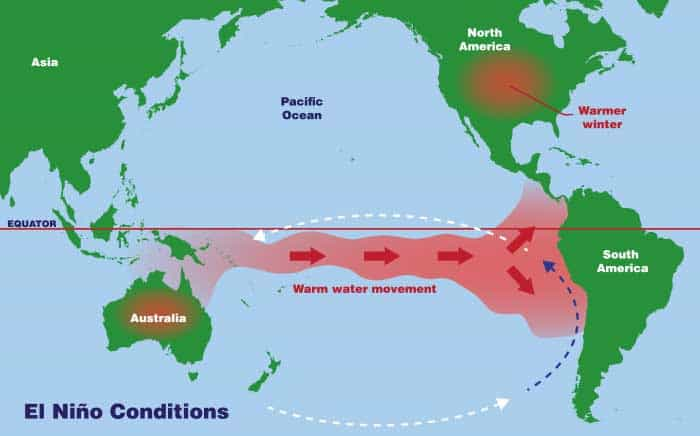
During El Niño, warm water moves eastward across the Pacific — disrupting precipitation patterns and triggering droughts and crop failures across Southeast Asia and Australia.

Extreme heat and reduced rainfall driven by El Niño conditions cause widespread crop failures — threatening food security and devastating coastal agricultural economies.
Advanced Climate Forecasts & Water Infrastructure
Using advanced climate forecasts and building new water systems can prevent major agricultural damage from El Niño effects. Ocean data can accurately predict El Niño patterns up to 14 months before the actual impact (Guimarães Nobre et al., 2019).
Using this approach, governments can intervene by investing in infrastructure such as water reservoirs and deep wells — preparing communities before conditions deteriorate.
Humanitarian organizations can use these predictions to help farmers select specific types of seeds that can survive even in higher heat and lower rainfall. Although these methods do not directly solve El Niño, they can reduce the financial damage caused by extreme heat.
Ocean data accurately predicts El Niño patterns up to 14 months in advance — giving governments and communities time to prepare (Guimarães Nobre et al., 2019).
Governments invest in water reservoirs and deep wells before drought conditions arrive — securing supply for agricultural communities.
Farmers receive guidance on selecting seed varieties suited to higher heat and lower rainfall — reducing crop failure risk during El Niño periods.
Resilient planning frameworks do not prevent El Niño or ocean warming — but they transform how communities respond. By combining 14-month advance predictions with water infrastructure investment and climate-adapted agriculture, these frameworks reduce the financial damage caused by extreme heat before it strikes.
Defensive Islanding & Microgrids
Atmospheric rivers are growing more dangerous with every degree of warming. Defensive islanding prevents localized flood damage from cascading into citywide power failure — automatically and instantly.
Rivers in the Sky, Growing More Dangerous
Atmospheric rivers are long areas of moisture in the sky that can carry more water than 15 Mississippi Rivers (NOAA, 2023). These systems have become very dangerous — capable of dropping a month's worth of rain in only a few hours.

Water vapor lifts from the Pacific Ocean, moves inland, and releases as heavy rain and snow when forced upward by coastal mountain ranges.
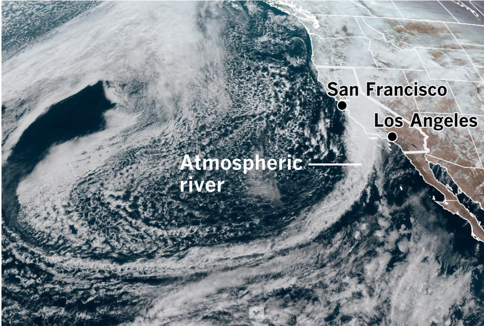
A massive atmospheric river system approaching the California coastline — stretching thousands of miles across the Pacific Ocean.
Smart Separation — Stop the Cascade
Defensive islanding and microgrids can prevent large power outages during these floods. This works by placing smart meters and digital controllers throughout the power network.
If a flood happens in one specific area, the system automatically separates that part from the main power grid. This islanding process prevents the technical failure from spreading to the rest of the city (Gonçalves et al., 2024).
While the flooded area might use its own local batteries or solar power to keep the lights on, the rest of the city stays safe and stable (Gonçalves et al., 2024).
Placed throughout the power network to continuously monitor grid conditions across the city.
When a flood occurs, the affected zone is automatically separated from the main grid — stopping failure from spreading to other areas.
The isolated zone powers itself using local batteries or solar — while the rest of the city remains fully operational.
Defensive islanding and microgrids address one of the most critical vulnerabilities exposed by intensifying atmospheric rivers — the risk that localized infrastructure damage cascades into widespread power failure. By automatically isolating affected zones and sustaining them with local batteries or solar power, the rest of the city stays safe and stable.
A Dual Framework
for a Warming Ocean
The ocean is Earth's primary thermal regulator. The warming of our ocean brings about an unstable environment.
Through our research, we explored how ocean warming acts as the primary macro-level driver for specific micro-level threats: marine loss, ocean acidification, and weather intensification. By adopting a dual-layered analytical framework to analyze this structure, we found that a singular approach is insufficient regarding a crisis of this scale.
Decarbonization, Microbubble Technology & Cooling Towers
To address the macro-level drivers of ocean warming, we came up with three solutions, including decarbonization, microbubble technology, and cooling towers. These solutions target the root thermodynamic cause. Along with these, proactively working on the micro-level threats that we identified is essential.
Through these solutions, we aimed to provide a localized defense against the immediate symptoms of a warming ocean. Our research argues that to solve ocean warming, we should move on from a one-dimensional policy and approach this crisis in a dual analytic framework. We need to mitigate the core thermodynamic causes at the macro-level, which is the root cause of ocean warming. We also need to apply the solutions we suggested to the micro-level threats with the goal of preserving our coastal and marine systems. Overall, our research shows that by combining climate mitigation, marine conservation, and sustainable management strategies, society can reduce the negative impacts of marine loss and protect the long-term health of ocean ecosystems.
Sources & Citations
Cai, W., Borlace, S., Lengaigne, M., Van Rensch, P., Collins, M., Vecchi, G., Timmermann, A., Santoso, A., McPhaden, M. J., Wu, L., England, M. H., Wang, G., Guilyardi, E., & Jin, F. (2014). Increasing frequency of extreme El Niño events due to greenhouse warming. Nature Climate Change, 4(2), 111–116. https://doi.org/10.1038/nclimate2100
Cheng, L., Abraham, J., Hausfather, Z., & Trenberth, K. E. (2019). How fast are the oceans warming? Science, 363(6423), 128–129. https://doi.org/10.1126/science.aav7619
Cheng, L., Abraham, J., Trenberth, K. E., Boyer, T., Mann, M. E., Zhu, J., Wang, F., Yu, F., Locarnini, R., Fasullo, J., Zheng, F., Li, Y., Zhang, B., Wan, L., Chen, X., Wang, D., Feng, L., Song, X., Liu, Y., . . . Lu, Y. (2024b). New record ocean temperatures and related climate indicators in 2023. Advances in Atmospheric Sciences, 41(6), 1068–1082. https://doi.org/10.1007/s00376-024-3378-5
Emanuel, K. (2005). Increasing destructiveness of tropical cyclones over the last 30 years. Nature, 436(7051), 686–688. https://doi.org/10.1038/nature03906
Ferrario, F., Beck, M. W., Storlazzi, C. D., Micheli, F., Shepard, C. C., & Airoldi, L. (2014). The effectiveness of coral reefs for coastal hazard risk reduction and adaptation. Nature Communications, 5(1), 3794. https://doi.org/10.1038/ncomms5894
Fisher, R., O'Leary, R. A., Low-Choy, S., Mengersen, K., Knowlton, N., Brainard, R. E., & Caley, M. J. (2015). Species richness on coral reefs and the pursuit of convergent global estimates. Current Biology, 25(4), 500–505. https://doi.org/10.1016/j.cub.2014.12.022
Food and Agriculture Organization (FAO). (2024). The State of World Fisheries and Aquaculture 2024: Blue Transformation in action. Rome. https://doi.org/10.4060/cc0461en
Friedlingstein, P., O'Sullivan, M., Jones, M. W., Andrew, R. M., Bakker, D. C. E., Hauck, J., Landschützer, P., Quéré, C. L., Luijkx, I. T., Peters, G. P., Peters, W., Pongratz, J., Schwingshackl, C., Sitch, S., Canadell, J. G., Ciais, P., Jackson, R. B., Alin, S. R., Anthoni, P., . . . Zheng, B. (2023b). Global Carbon Budget 2023. Earth System Science Data, 15(12), 5301–5369. https://doi.org/10.5194/essd-15-5301-2023
Frölicher, T. L., Fischer, E. M., & Gruber, N. (2018). Marine heatwaves under global warming. Nature, 560(7718), 360–364. https://doi.org/10.1038/s41586-018-0383-9
Gruber, N., Clement, D., Carter, B. R., Feely, R. A., van Heuven, S., Hoppema, M., ... & Wanninkhof, R. (2019). The oceanic sink for anthropogenic CO₂ from 1994 to 2007. Science, 363(6432), 1193–1199. https://doi.org/10.1126/science.aau5153
Hobday, A. J., Alexander, L. V., Perkins, S. E., Smale, D. A., Straub, S. C., Oliver, E. C., Benthuysen, J. A., Burrows, M. T., Donat, M. G., Feng, M., Holbrook, N. J., Moore, P. J., Scannell, H. A., Gupta, A. S., & Wernberg, T. (2016). A hierarchical approach to defining marine heatwaves. Progress in Oceanography, 141, 227–238. https://doi.org/10.1016/j.pocean.2015.12.014
Hoegh-Guldberg, O., Mumby, P. J., Hooten, A. J., Steneck, R. S., Greenfield, P., Gomez, E., Harvell, C. D., Sale, P. F., Edwards, A. J., Caldeira, K., Knowlton, N., Eakin, C. M., Iglesias-Prieto, R., Muthiga, N., Bradbury, R. H., Dubi, A., & Hatziolos, M. E. (2007). Coral reefs under rapid climate change and ocean acidification. Science, 318(5857), 1737–1742. https://doi.org/10.1126/science.1152509
Hughes, T. P., Anderson, K. D., Connolly, S. R., Heron, S. F., Kerry, J. T., Lough, J. M., Baird, A. H., Baum, J. K., Berumen, M. L., Bridge, T. C., Claar, D. C., Eakin, C. M., Gilmour, J. P., Graham, N. a. J., Harrison, H., Hobbs, J. A., Hoey, A. S., Hoogenboom, M., Lowe, R. J., . . . Wilson, S. K. (2018b). Spatial and temporal patterns of mass bleaching of corals in the Anthropocene. Science, 359(6371), 80–83. https://doi.org/10.1126/science.aan8048
IPCC. (2021). Climate Change 2021: The Physical Science Basis. Contribution of Working Group I to the Sixth Assessment Report of the Intergovernmental Panel on Climate Change. Cambridge University Press. https://www.ipcc.ch/assessment-report/ar6/
IUCN. (2016). Explaining ocean warming: Causes, scale, effects and consequences. Gland, Switzerland. https://doi.org/10.2305/IUCN.CH.2016.08.en
Knutson, T., Camargo, S. J., Chan, J. C. L., Emanuel, K., Ho, C., Kossin, J., Mohapatra, M., Satoh, M., Sugi, M., Walsh, K., & Wu, L. (2019). Tropical Cyclones and Climate Change Assessment: Part II: Projected response to anthropogenic warming. Bulletin of the American Meteorological Society, 101(3), E303–E322. https://doi.org/10.1175/bams-d-18-0194.1
Levitus, S., Antonov, J. I., Boyer, T. P., Baranova, O. K., Garcia, H. E., Locarnini, R. A., Mishonov, A. V., Reagan, J. R., Seidov, D., Yarosh, E. S., & Zweng, M. M. (2012). World ocean heat content and thermosteric sea level change (0–2000 m), 1955–2010. Geophysical Research Letters, 39(10). https://doi.org/10.1029/2012gl051106
Loeb, N. G., Johnson, G. C., Thorsen, T. J., Lyman, J. M., Rose, F. G., & Kato, S. (2021). Satellite and ocean data reveal marked increase in Earth's heating rate. Geophysical Research Letters, 48(13). https://doi.org/10.1029/2021gl093047
McLeod, E., Chmura, G. L., Bouillon, S., Salm, R., Björk, M., Duarte, C. M., Lovelock, C. E., Schlesinger, W. H., & Silliman, B. R. (2011). A blueprint for blue carbon: toward an improved understanding of the role of vegetated coastal habitats in sequestering CO₂. Frontiers in Ecology and the Environment, 9(10), 552–560. https://doi.org/10.1890/110004
McPhaden, M. J., Santoso, A., & Cai, W. (2020). El Niño Southern oscillation in a changing climate. In Geophysical monograph. https://doi.org/10.1002/9781119548164
Menéndez, P., Losada, I. J., Torres-Ortega, S., Narayan, S., & Beck, M. W. (2020). The global flood protection benefits of mangroves. Scientific Reports, 10(1), 4404. https://doi.org/10.1038/s41598-020-61136-6
NASA. (2024). NASA analysis confirms 2023 as warmest year on record. https://www.nasa.gov/news-release/nasa-analysis-confirms-2023-as-warmest-year-on-record
NOAA National Centers for Environmental Information. (2024). State of the Climate: Global Climate Report for Annual 2023. https://www.ncei.noaa.gov/access/monitoring/monthly-report/global/202313
NOAA PMEL. (2024). Ocean Acidification: The Other Carbon Dioxide Problem. https://www.pmel.noaa.gov/co2/story/Ocean+Acidification
OECD. (2016). The Ocean Economy in 2030. OECD Publishing, Paris.
Ocean warming | CMEMS. (2024). https://marine.copernicus.eu/explainers/phenomena-threats/ocean-warming
Oliver, E. C. J., Donat, M. G., Burrows, M. T., Moore, P. J., Smale, D. A., Alexander, L. V., Benthuysen, J. A., Feng, M., Gupta, A. S., Hobday, A. J., Holbrook, N. J., Perkins-Kirkpatrick, S. E., Scannell, H. A., Straub, S. C., & Wernberg, T. (2018). Longer and more frequent marine heatwaves over the past century. Nature Communications, 9(1), 1324. https://doi.org/10.1038/s41467-018-03732-9
Purkey, S. G., & Johnson, G. C. (2010). Warming of Global Abyssal and Deep Southern Ocean Waters between the 1990s and 2000s: Contributions to Global Heat and Sea Level Rise Budgets. Journal of Climate, 23(23), 6336–6351. https://doi.org/10.1175/2010jcli3682.1
Spalding, M., Burke, L., Wood, S. A., Ashpole, J., Hutchison, J., & Ermgassen, P. Z. (2017). Mapping the global value and distribution of coral reef tourism. Marine Policy, 82, 104–113. https://doi.org/10.1016/j.marpol.2017.05.014
Trenberth, K. E., Fasullo, J., & Smith, L. (2005). Trends and variability in column-integrated atmospheric water vapor. Climate Dynamics, 24(7–8), 741–758. https://doi.org/10.1007/s00382-005-0017-4
UNEP. (2023). Blue Carbon: The Role of Healthy Oceans in Binding Carbon. United Nations Environment Programme.
Von Schuckmann, K., Minière, A., Gues, F., Cuesta-Valero, F. J., Kirchengast, G., Adusumilli, S., Straneo, F., Ablain, M., Allan, R. P., Barker, P. M., Beltrami, H., Blazquez, A., Boyer, T., Cheng, L., Church, J., Desbruyeres, D., Dolman, H., Domingues, C. M., García-García, A., . . . Zemp, M. (2023b). Heat stored in the Earth system 1960–2020: where does the energy go? Earth System Science Data, 15(4), 1675–1709. https://doi.org/10.5194/essd-15-1675-2023
World Bank. (2017). The Potential of the Blue Economy: Increasing Long-term Benefits of the Sustainable Use of Marine Resources for Small Island Developing States and Coastal Least Developed Countries. Washington, DC. https://openknowledge.worldbank.org/entities/publication/a36b153d-0284-58b0-b7b3-35a26438f31b
World Meteorological Organization. (2026, March 12). State of the Global Climate 2023. https://wmo.int/publication-series/state-of-global-climate/state-of-global-climate-2023
Solutions — DecarbonizationDecarbonisation in shipping: sustainable solutions. (n.d.). Wartsila. https://www.wartsila.com/marine/decarbonisation
Solutions — MicrobubbleEnhanced Microbubbles: Sea Foam. https://www.geoengineeringmonitor.org/wp-content/uploads/2021/04/enhanced_microbubbles.pdf
Korhonen, H., et al. (2010). Enhancement of Marine Cloud Albedo via Controlled Sea Spray Injections: A Global Model Study of the Influence of Emission Rates, Microphysics and Transport. Atmospheric Chemistry and Physics, Copernicus GmbH, 3 May 2010. acp.copernicus.org/articles/10/4133/2010/
Microbubbles and Sea Foam - Geoengineering Monitor. https://www.geoengineeringmonitor.org/technologies/microbubbles
Seitz, R., et al. (2011). Bright water: hydrosols, water conservation and climate change. Climate Change. https://doi.org/10.1007/s10584-010-9965-8
Solutions — Cooling TowerAmstutz, T. (2021, June 11). The Indian Point nuclear power plant closes after 59 years of operation. The Science Survey. https://thesciencesurvey.com/news/2021/06/11/the-indian-point-nuclear-power-plant-closes-after-59-years-of-operation/
CET Enviro. (2025, June 20). The importance of cooling towers in power plants. cet-enviro. https://cet-enviro.com/importance-of-cooling-towers-in-power-plants/
Dooner, S. (2018, April 18). New York State enforce cooling tower regulations to control legionella. Legionella Control International. https://legionellacontrol.com/international/new-york-state-cooling-tower-regulations/
Electric Power Research Institute. (n.d.). EPRI national cost estimate for retrofit of U.S. power plants with closed-cycle cooling [PDF]. https://www.epri.com/research/products/000000000001022212
How cooling towers Work (Diagram, Pictures & Principles) - Sara Cooling Tower. (2024, March 29). https://www.saracoolingtower.com/blog/how-cooling-towers-work.html
Mega cooling tower completed at Chinese unit. (2025, September 19). World Nuclear News. https://www.world-nuclear-news.org/articles/mega-cooling-tower-completed-at-chinese-unit
saVRee. (2019, January 8). How cooling towers work (Working Principle) [Video]. YouTube. https://www.youtube.com/watch?v=sWJCWDpY9is
U.S. Environmental Protection Agency. (2001). Document for the final regulations addressing cooling water intake structures for new offshore oil and gas extraction facilities.
U.S. Environmental Protection Agency. (n.d.). Cooling system retrofit cost analysis [PDF]. https://www3.epa.gov/region1/npdes/schillerstation/pdfs/AR-333.pdf
What is a Cooling Tower | Baltimore Aircoil. (n.d.). https://baltimoreaircoil.com/what-is-a-cooling-tower
Marine LossCapotondi, A., Rodrigues, R. R., Gupta, A. S., Benthuysen, J. A., Deser, C., Frölicher, T. L., Lovenduski, N. S., Amaya, D. J., Grix, N. L., Xu, T., Hermes, J., Holbrook, N. J., Martinez-Villalobos, C., Masina, S., Roxy, M. K., Schaeffer, A., Schlegel, R. W., Smith, K. E., & Wang, C. (2024). A global overview of marine heatwaves in a changing climate. Communications Earth & Environment, 5(1). https://doi.org/10.1038/s43247-024-01806-9
Catastrophic heat wave wiped out 2 endangered corals in the Florida Keys. Now what? (n.d.). Florida International University. https://news.fiu.edu/2025/catastrophic-heat-wave-wiped-out-2-endangered-corals-in-the-florida-keys-now-what
Climate Analytics. (2025). Troubled waters: Risks and realities of blue carbon in climate action. https://climateanalytics.org/publications/troubled-waters-risks-and-realities-of-blue-carbon-in-climate-action
Communications, A. (2024b, June 7). Heat tolerant corals may be the key to improving restoration efforts. NOAA's Atlantic Oceanographic and Meteorological Laboratory. https://www.aoml.noaa.gov/heat-tolerant-corals-to-improve-restoration-efforts/
Directory, S. (2025, October 4). Predictive Analytics for Coral Bleaching Early Warning Systems → Scenario. Prism → Sustainability Directory. https://prism.sustainability-directory.com/scenario/predictive-analytics-for-coral-bleaching-early-warning-systems/
Duarte, C. M., Blythe, J., Devlin, M. J., Hilmi, N., Klein, S. G., Schaffelke, B., Suggett, D. J., Tawake, A., & Obura, D. O. (2025). Layering solutions to conserve tropical coral reefs in crisis. Nature Reviews Biodiversity, 1(12), 788–805. https://doi.org/10.1038/s44358-025-00106-0
Ferrara, E. F., Roik, A., Wöhrmann-Zipf, F., & Ziegler, M. (2025). Ex situ thermal preconditioning modulates coral physiology and enhances heat tolerance: a multispecies perspective for active restoration. Environmental Science & Technology, 59(17), 8527–8540. https://doi.org/10.1021/acs.est.4c08640
Friess, D. A., et al. (2024). Blue carbon and the role of mangroves in carbon sequestration. Trends in Ecology & Evolution. https://www.sciencedirect.com/science/article/pii/S1385110124000376
Growing heat tolerant corals. (2025, November 28). Great Barrier Reef Foundation. https://www.barrierreef.org/what-we-do/projects/growing-heat-tolerant-corals
Hae-Rin, L. (2025, July 6). Unprecedented marine heat waves fuel fishery disaster in Korea. The Korea Times. https://www.koreatimes.co.kr/southkorea/environment-animals/20250704/unprecedented-marine-heat-waves-fuel-fishery-disaster-in-korea
Heat-resistant 'super corals': a source of hope for the future of coral reefs? (2025b, April 23). https://www.unesco.org/en/articles/heat-resistant-super-corals-source-hope-future-coral-reefs
Heron, S., Johnston, L., Liu, G., Geiger, E., Maynard, J., De La Cour, J., Johnson, S., Okano, R., Benavente, D., Burgess, T., Iguel, J., Perez, D., Skirving, W., Strong, A., Tirak, K., & Eakin, C. (2016). Validation of Reef-Scale thermal stress satellite products for coral bleaching monitoring. Remote Sensing, 8(1), 59. https://doi.org/10.3390/rs8010059
Herr, D., et al. (2016). Coastal blue carbon ecosystems. https://www.vliz.be/imisdocs/publications/ocrd/359946.pdf
Hidayati, E., Himawan, M. R., & Jefri, E. (2023). Understanding Enabling Factors for Community-Led Coral Reef Health Monitoring and Early Warning System through Participatory Action Research. Jurnal Sains Teknologi & Lingkungan, 9(4), 775–794. https://doi.org/10.29303/jstl.v9i4.560
Hilmi, N., et al. (2021). The role of blue carbon in climate change mitigation and carbon stock conservation. Frontiers in Climate, 3, 710546. https://www.frontiersin.org/journals/climate/articles/10.3389/fclim.2021.710546/full
Humanes, A., Lachs, L., Beauchamp, E., et al. (2024). Selective breeding enhances coral heat tolerance to marine heatwaves. Nat Commun 15, 8703. https://doi.org/10.1038/s41467-024-52895-1
Janes, H., et al. (2020). Quantifying fisheries enhancement from coastal vegetated ecosystems. https://oceanwealth.org/wp-content/uploads/2020/04/Janes_etal-2020_EcoServ.pdf
Lippert, M., Goodman, M., Cornwell, B., Armstrong, K., Walker, N. S., Nestor, V., Golbuu, Y., & Palumbi, S. (2026). Satellite-derived temperature measures miss key physiologically relevant thermal trends on Palauan reefs. PLoS ONE, 21(2), e0341926. https://doi.org/10.1371/journal.pone.0341926
Liu, B., Foo, S. A., & Guan, L. (2024). Optimization of thermal stress thresholds on regional coral bleaching monitoring by satellite measurements of sea surface temperature. Frontiers in Marine Science, 11. https://doi.org/10.3389/fmars.2024.1438087
Liu, G., Eakin, C. M., Chen, M., Kumar, A., De La Cour, J. L., Heron, S. F., Geiger, E. F., Skirving, W. J., Tirak, K. V., & Strong, A. E. (2018). Predicting heat stress to inform Reef management: NOAA Coral Reef Watch's 4-Month coral Bleaching outlook. Frontiers in Marine Science, 5. https://doi.org/10.3389/fmars.2018.00057
Macreadie, P. I., et al. (2026). Priority questions for the next decade of blue carbon science. Nature Ecology & Evolution. https://www.nature.com/articles/s41559-026-03020-6
McGlathery, K. J., et al. (2024). Restoring blue carbon ecosystems. Cambridge Prisms: Coastal Futures. https://pmc.ncbi.nlm.nih.gov/articles/PMC12337601/
Monfared, M. (2024, April 9). Coral bleaching on the Great Barrier Reef 2024. ICRI. https://icriforum.org/gbr-bleaching-2024/
Najeeb, S., Khan, R. a. A., Deng, X., & Wu, C. (2025). Drivers and consequences of degradation in tropical reef island ecosystems: strategies for restoration and conservation. Frontiers in Marine Science, 12. https://doi.org/10.3389/fmars.2025.1518701
NASA Scientific Visualization Studio. (2014, February 22). Monitoring coral reefs. NASA Scientific Visualization Studio. https://svs.gsfc.nasa.gov/30490/
Niranjan, A. (2026, March 3). Chronic ocean heating fuels 'staggering' loss of marine life, study finds. The Guardian. https://www.theguardian.com/environment/2026/feb/25/chronic-ocean-heating-fuels-staggering-loss-marine-life-study
NOAA Coral Reef Watch Daily Global 5km Satellite Marine Heatwave Watch Product (Version 1.0.1). (n.d.). https://coralreefwatch.noaa.gov/product/marine_heatwave/
NOAA Coral Reef Watch Operational Daily Near-Real-Time Global 5-km satellite coral bleaching monitoring products. (n.d.). https://www.pacioos.hawaii.edu/cgi-bin/get_metadata.py?id=dhw_5km
NOAA. (n.d.). NOAA Blue Carbon White Paper. https://repository.library.noaa.gov/view/noaa/40456/noaa_40456_DS1.pdf
Smith, K. E., Burrows, M. T., Hobday, A. J., Gupta, A. S., Moore, P. J., Thomsen, M., Wernberg, T., & Smale, D. A. (2021). Socioeconomic impacts of marine heatwaves: Global issues and opportunities. Science, 374(6566), eabj3593. https://doi.org/10.1126/science.abj3593
Tian, H., Liu, Y., Li, J., Xing, Q., Sun, H., & Tian, Y. (2024). Satellite nighttime remote sensing promotes the spatially refined monitoring and assessment of offshore fishery. International Journal of Digital Earth, 17(1). https://doi.org/10.1080/17538947.2024.2322762
United Nations. (2026). The United Nations and global blue carbon governance. Frontiers in Marine Science. https://www.frontiersin.org/journals/marine-science/articles/10.3389/fmars.2025.1734688/full
Watch, N. C. R. (n.d.). NOAA Coral Reef Watch Daily Global 5km Satellite Marine Heatwave Watch Product (Version 1.0.1). https://coralreefwatch.noaa.gov/product/marine_heatwave/
Ocean AcidificationLindsey & Dahlman. (2025, June 26). Climate change: Ocean heat content. NOAA Climate.gov. https://www.climate.gov/news-features/understanding-climate/climate-change-ocean-heat-content
Minogue, Kristen. (2019, December 10). Eight Ways to Save the Ocean's Oxygen. Shorelines. sercblog.si.edu/eight-ways-we-can-save-the-oceans-oxygen/
Mutahi, G., van Lier, J. B., & Spanjers, H. (2024). Leveraging organic acids in bipolar membrane electrodialysis (BPMED) can enhance ammonia recovery from scrubber effluents. Water Research, 265, 122296. https://doi.org/10.1016/j.watres.2024.122296
NOAA Fisheries. (2022). Seaweed in the Spotlight. https://www.fisheries.noaa.gov/feature-story/seaweed-spotlight
NOAA. (2023, August 24). What is Blue Carbon? https://oceanservice.noaa.gov/facts/bluecarbon.html
Scott, M., & Lindsey, R. (2022, September 29). Understanding blue carbon. https://www.climate.gov/news-features/understanding-climate/understanding-blue-carbon
The Blue Carbon Initiative. (2019). The Blue Carbon Initiative. https://www.thebluecarboninitiative.org
Velev, Kalina. (2025, September 25). Ocean Warming – Earth Indicator. NASA Science. science.nasa.gov/earth/explore/earth-indicators/ocean-warming/
von Leesen, G., Bardarson, H., Halldórsson, S. A., Whitehouse, M. J., & Campana, S. E. (2021). Accuracy of Otolith Oxygen Isotope Records Analyzed by SIMS as an Index of Temperature Exposure of Wild Icelandic Cod (Gadus morhua). Frontiers in Marine Science, 8. https://doi.org/10.3389/fmars.2021.698908
Weather IntensificationEmanuel, K. (2017). Hurricane Physics.
Gonçalves, A. C. R., Costoya, X., Nieto, R., & Liberato, M. L. R. (2024). Extreme weather events on energy systems: a comprehensive review on impacts, mitigation, and adaptation measures. Sustainable Energy Research, 11(4). https://doi.org/10.1186/s40807-023-00097-6
Guimarães Nobre, G., Muis, S., Veldkamp, T. I. E., & Ward, P. J. (2019). Achieving the reduction of disaster risk by better predicting impacts of El Niño and La Niña. Progress in Disaster Science, 2, 100022. https://doi.org/10.1016/j.pdisas.2019.100022
IPCC. (2021). Climate Change 2021: The Physical Science Basis. https://www.ipcc.ch/report/ar6/wg1/
Islam, F. A. S. (2024). Assessment of the Global Climatic Impacts due to El Nino and La Nina Events. ResearchGate.
Jiang, F., et al. (2024). Permanent El Niño-like Warming in the Pacific. https://www.nature.com/articles/s41467-024-50663-9
NASA. (n.d.). Atmospheric Rivers. https://www.earthdata.nasa.gov/topics/atmosphere/atmospheric-rivers
NOAA. (2023). What are Atmospheric Rivers? https://www.noaa.gov/stories/what-are-atmospheric-rivers
Reed, K. A., et al. (2024). Hurricane Ian Damage Doubling. https://iopscience.iop.org/article/10.1088/2752-5295/ad8d02
Vecchi, G. A., et al. (2022). Atlantic Tropical Cyclone Season Probability. https://wcd.copernicus.org/articles/3/471/2022/
AI AcknowledgementThe research was prepared with assistance from ChatGPT (OpenAI, 2026).
The research was prepared with assistance from Gemini (Google, 2026).
The research was prepared with assistance from Perplexity (Perplexity AI, 2026).
The webpage design was assisted by Claude (Anthropic, 2026).